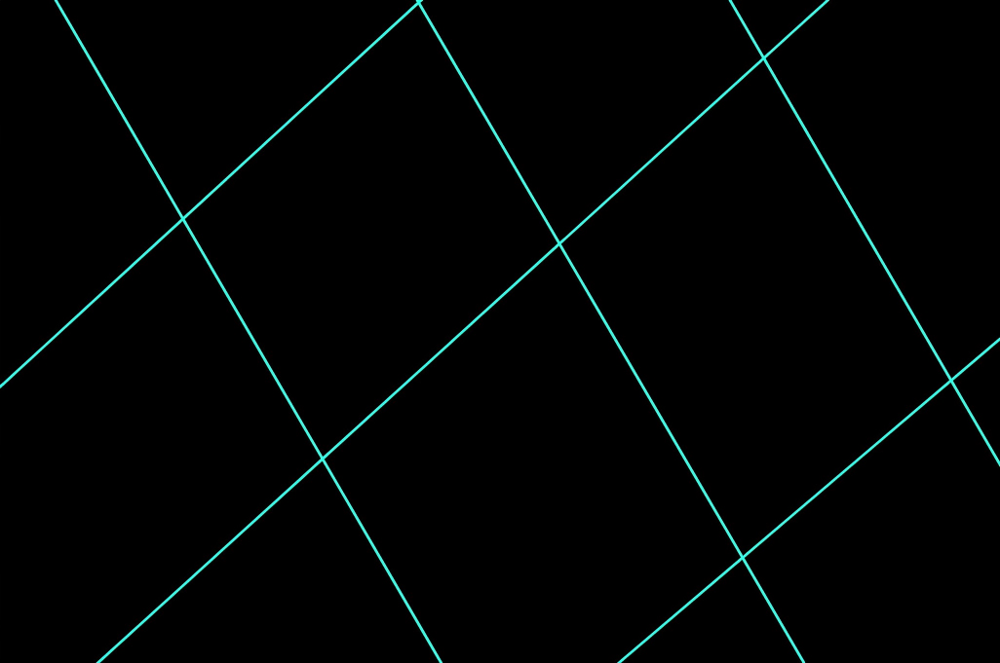

<section class="home-grid">
  <!-- 左栏：博客列表 -->
  <div class="blog-list">
    <h2>Blog Posts</h2>
    <ul>
      {% for post in site.posts %}
        <li>
          <a href="{{ post.url }}">{{ post.title }}</a>
          <span class="post-date">{{ post.date | date: "%Y-%m-%d" }}</span>
        </li>
      {% endfor %}
    </ul>
  </div>

  <!-- 右栏：项目卡片 -->
  <div class="project-list">
    <h2>Projects</h2>
    <div class="project-grid">
      <!-- 例：手动写项目卡片，或如你前面那样拷贝过来 -->
      <a class="project-card" href="{{ '/projects/project1.html' | relative_url }}">
        
        <p class="project-desc">project 1</p>
      </a>
      <a class="project-card" href="{{ '/projects/project2.html' | relative_url }}">
        
        <p class="project-desc">project 2</p>
      </a>
      <!-- …更多项目卡片… -->
    </div>
  </div>
</section>